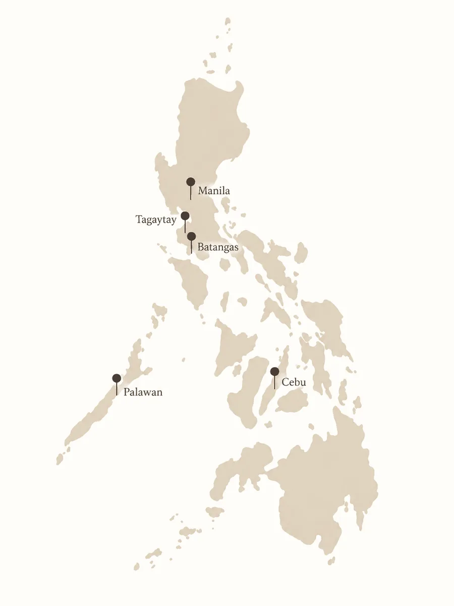
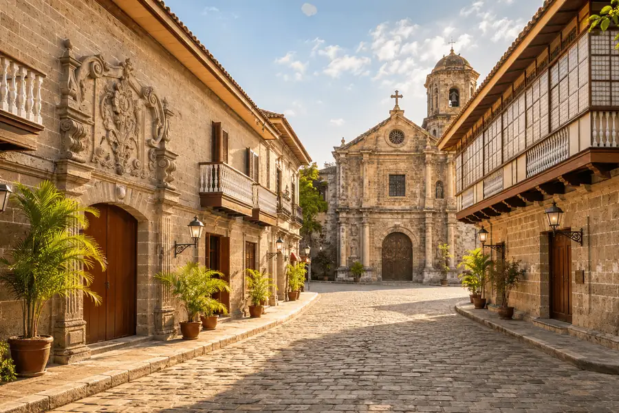
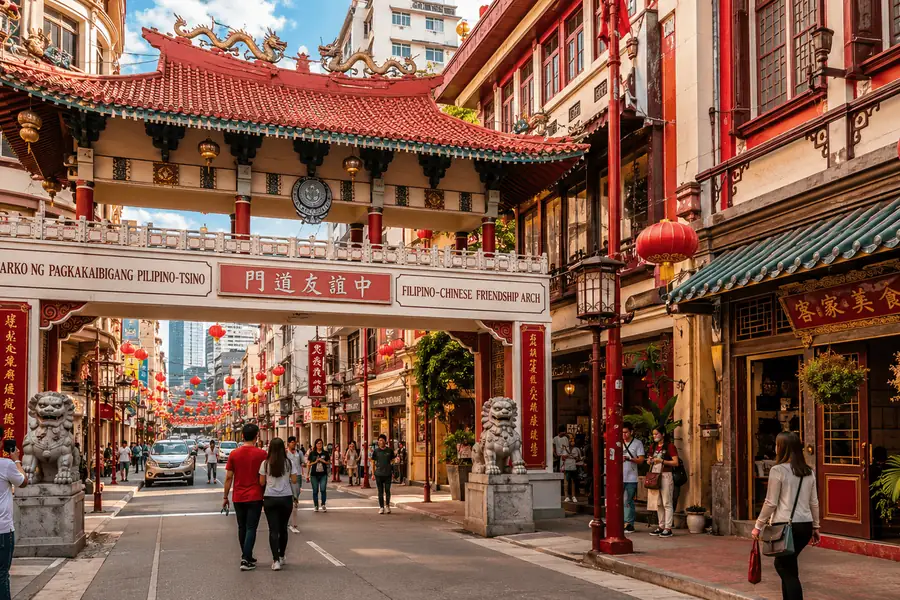
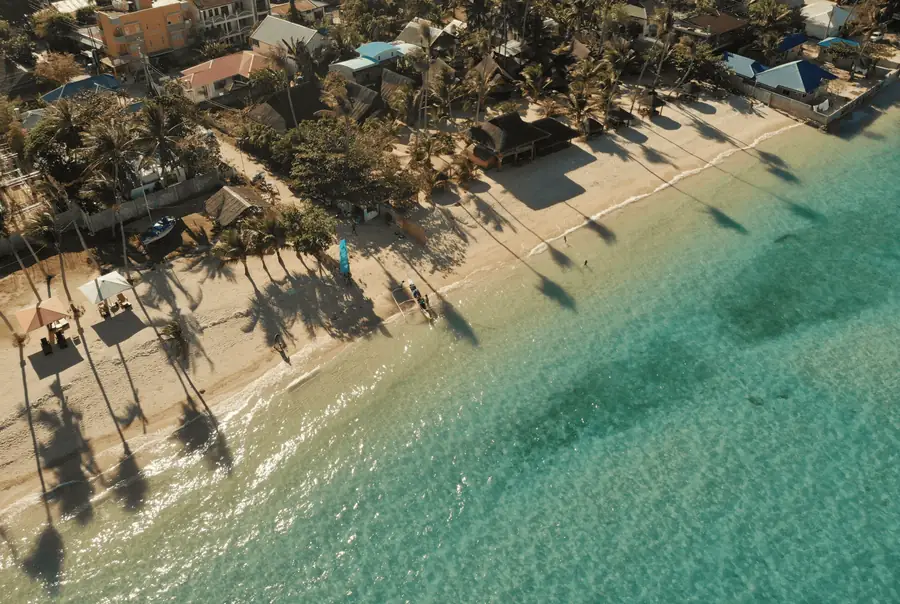
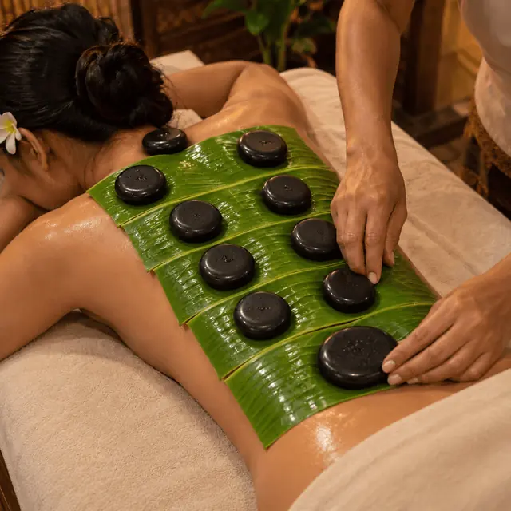
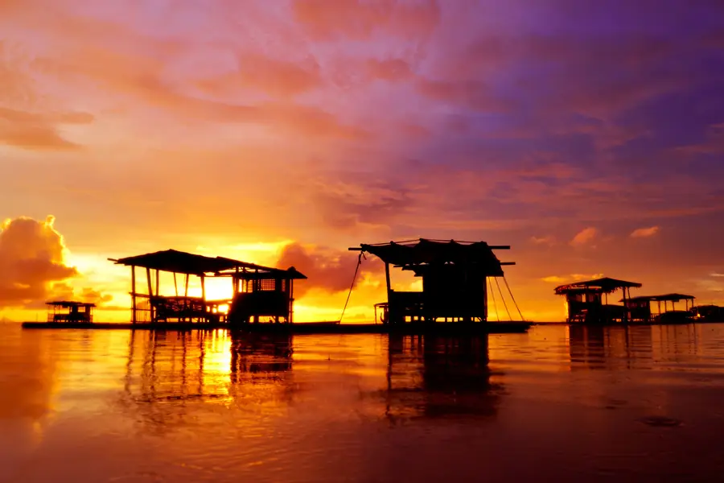
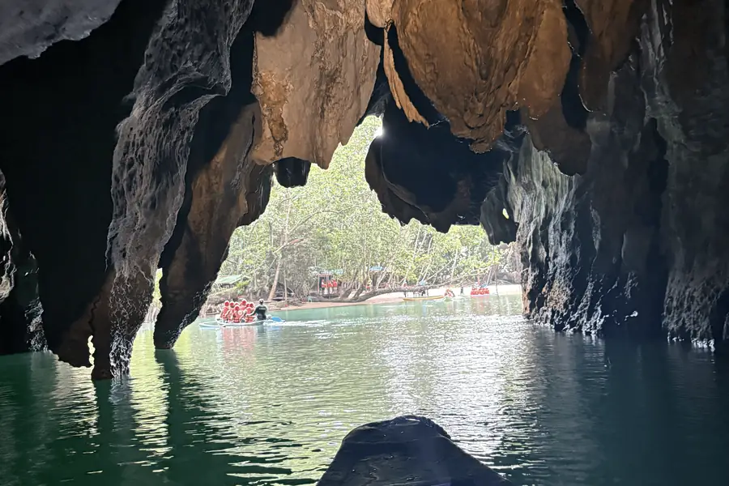
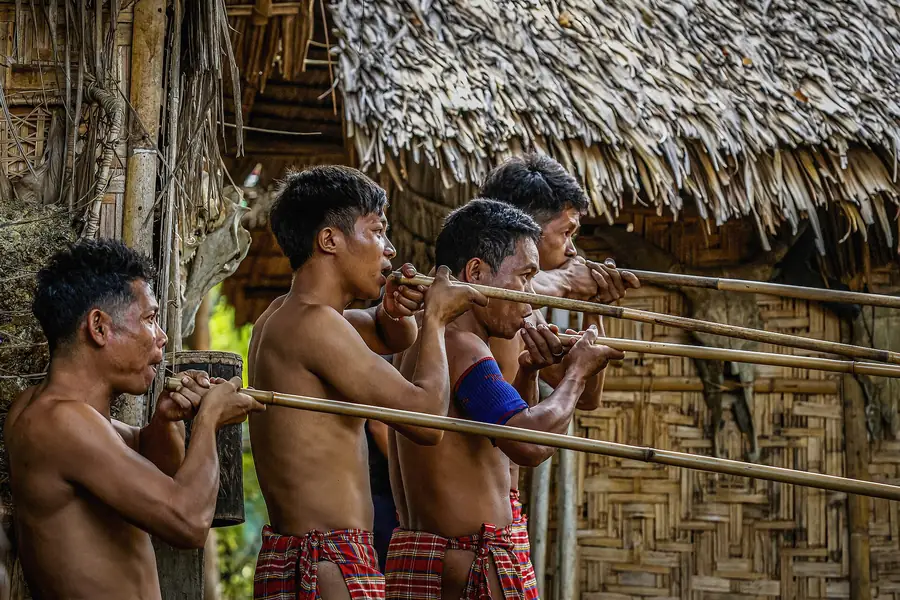

Why choose the Philippines for medical travel?
In the Philippines, advanced healthcare sits alongside extraordinary hospitality, rich culture and places that invite you to recover differently.
Reasons the Philippines stands apart
Internationally recognized healthcare
Heal Before Home partners with JCI-accredited healthcare institutions and facilities in the Philippines, reflecting established standards for patient safety and quality of care.
English-language fluency
English is the standard language across healthcare and professional settings in the Philippines, supporting clear communication throughout consultations, treatment and follow-up.
A culture of care & hospitality
Warmth, attentiveness and hospitality are deeply rooted in Filipino life, qualities that can make the experience surrounding treatment feel more personal and supported.
A layered cultural identity
The Philippines reflects Austronesian roots, Indigenous traditions, centuries of trade and migration, and Spanish, American, Chinese and wider Asian influences, woven through architecture, cuisine, languages, festivals and traditions, giving each region a character of its own.

More than 7,600 islands.
Volcanic highlands, limestone formations, tropical coastlines, dense cities and quiet countryside. Heal Before Home currently focuses on five destinations: Manila, Cebu, Tagaytay, Batangas and Palawan. Each reveals a distinct side of the country.
Manila and Cebu anchor the care itself. Tagaytay, Batangas and Palawan are optional recovery destinations, available when your provider clears you to travel beyond your primary care location.

Modern Care. Culture. Lifestyle.
Manila brings together leading medical centres, sophisticated urban living and centuries of cultural history. From the modern districts of BGC and Makati to the heritage streets of Intramuros, the capital offers a compelling balance of contemporary care, culture and lifestyle.
Beyond appointments and recovery, Manila offers exceptional dining, luxury shopping, galleries, entertainment and nightlife. When your care plan allows, these experiences can become part of a broader journey, whether you are travelling for treatment yourself or accompanying someone you love.


Healthcare Access. Heritage. Island Experience.
Cebu combines a major healthcare hub with the ease and character of island life. Respected medical centres, specialty care and modern conveniences sit within reach of a city shaped by centuries of history and a distinctive coastal culture.
Beyond care, Cebu opens onto heritage landmarks, vibrant dining and some of the Philippines' most beautiful coastal settings. When your recovery plan allows, the journey can extend naturally from the city into quieter seaside surroundings.


Recover beyond the city.
Not every recovery needs to unfold in the city. With appropriate travel clearance, you may choose to continue your recovery in Tagaytay, Batangas or Palawan, whether for a quieter setting after treatment or as a restorative extension before returning home. Heal Before Home coordinates the timing, transportation, accommodation and support around your recovery needs.


Mountain Air. Taal Views. Quiet Retreat.
Tagaytay offers a quieter counterpoint to the energy of Metro Manila. Set along a cool highland ridge overlooking Taal Lake and its volcanic landscape, it is a natural place to slow the pace of the journey and reconnect with open air, greenery and a sense of space.
For guests whose care and recovery plans allow, Tagaytay can provide a restorative change of setting within reach of the capital, with private retreats, wellness experiences, farm-to-table dining and sweeping views that invite a more unhurried rhythm.
Coastal Calm. Nature. Renewal.
Batangas provides a lower-density coastal setting with direct highway access from Metro Manila. Its combination of natural surroundings, historic towns, and private accommodations makes the region well-suited for quiet restorative stays and wellness itineraries away from the urban center.
When a healthcare provider determines regional travel is appropriate, Heal Before Home can coordinate an extended itinerary in Batangas. Logistics are structured around the treating provider’s travel guidance and include organizing accommodations, private ground transportation, and selected wellness experiences.



Island Stillness. Living Culture. Open Water.
Palawan offers a striking change of pace: limestone cliffs, clear waters, quiet island landscapes, and a cultural identity shaped by Indigenous traditions, fishing communities and generations of island life.
For those seeking more space after treatment or extra time before returning home, Palawan offers privacy, seclusion, local character and a gentler rhythm away from the city.


A country with a character of its own.
Festivals, food, language and craft change from island to island. When your recovery plan allows, we can build a little of that into your stay, chosen with your provider's guidance and your stage of recovery in mind.